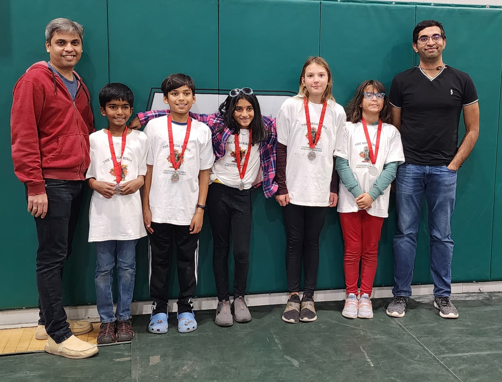

Four names. Three seasons. One Breakthrough Award.
We've been doing this since 5th grade. The team has gone through a few identities along the way —
each one taught us something we needed for the next.
2023
★
FLL · Masterpiece
The Megabirds

// 2023 · the original lineup, with mentors
Our first season. Our school's mascot was a bird, so naturally our Lego mascot was a chicken.
We learned what an Innovation Project was. We learned how to lose graciously. We learned that
robotics is mostly debugging.
Mascot · Lego chickenStatus · Curious beginners
2024
★
FLL · Submerged
The Awesome Inventors
Year two. Shorthand: A.I. Yes, on purpose. We thought it was funny.
We started taking the engineering portfolio seriously, prototyped harder, and shipped
a custom Innovation Project we were genuinely proud of.
Acronym · A.I.Status · Sharpening
2025
★
FLL · Unearthed
The Conducktors 🏆 Breakthrough Award
We wanted a name that was fun (ducks!) and related to robotics (conductors!) — and
we crammed them together. The Conducktors won the Breakthrough Award
for creativity on our Innovation Project and our custom robot architecture. Our final
FLL season, and our best.
Pun rating · 10/10Status · Champions
2026
⚡
FTC · Rookie season
The Superconducktors
Lego is for kids. We're upgrading to metal, motors, and high-powered electronics.
The "Super" stands for the leap into FTC, the conductor metaphor for the
electronics, and a fundamentally unscientific belief that adding "super" to
anything makes it better. You are here.